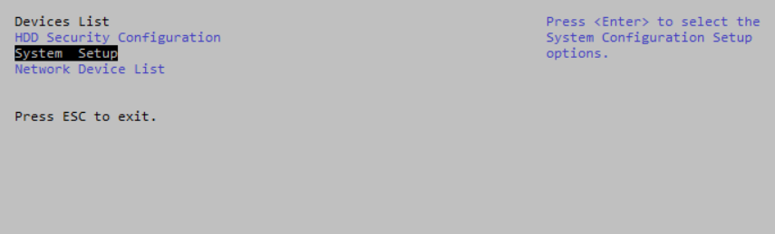

Tuning the BIOS makes runtime behavior more deterministic; features such as power management are disabled and the CPU is running at top speed. Performance outside of the context of determinism may be negatively impacted. Consider the following tuning configuration to execute the TSN Reference Software demos. Based on your use case, you can decide later to use a different configuration.
Enable Intel SpeedStep® Technology and C-States in BIOS [Board A & Board B]
- While the platform is booting, press F2 to enter the BIOS menu
- Go to Device Manager > System Setup > CPU Configuration > CPU Power Management

- Set Intel SpeedStep® technology to Enable
- Set C-States to Disable
- Save the changes in BIOS menu and then restart.
Enable Performance Mode in Board A and Board B
Follow these steps to change the CPU frequency from scaling governor to performance mode. This ensures the CPU is running at the highest frequency.
Note
Repeat these steps with every restart.- Start a new terminal
- Enter the following:
# echo performance > /sys/devices/system/cpu/cpu0/cpufreq/scaling_governor # echo performance > /sys/devices/system/cpu/cpu1/cpufreq/scaling_governor # echo performance > /sys/devices/system/cpu/cpu2/cpufreq/scaling_governor # echo performance > /sys/devices/system/cpu/cpu3/cpufreq/scaling_governor
- [Optional]
Check the CPU clock frequency:
# cat /proc/cpuinfo | grep MHz
Note
Once the CPU Clock is optimized, the CPU Frequency should typically be over 1500 MHz.